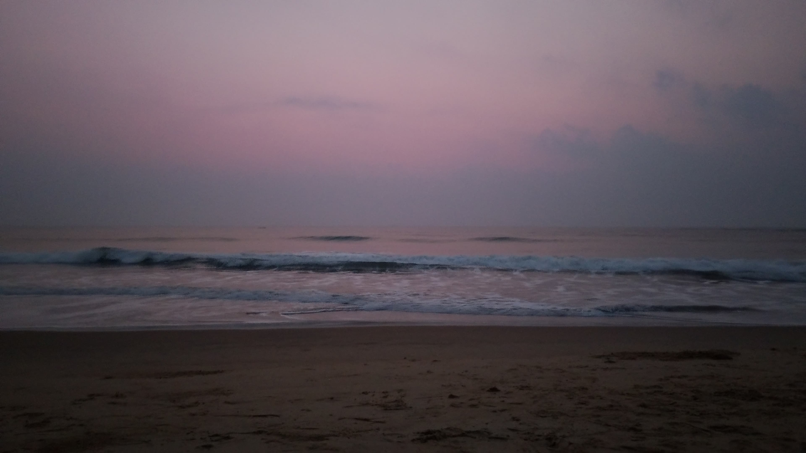

Author: Gowtham Muraharirao | Date: 10 Mar 2025
Early morning followed by a horrible night, I went in search of peace and myself and landed at the perfect spot, the beach.
The time I went there was perfect, it was close to 5 AM, and it was still dark just like the darkness in my head.
I sat there and my brain was giving multiple thoughts as usual, keeping me busy. It's not the brain's fault too—really, a lot is happening.
But after a few minutes there, I realized something. While my brain was giving a new thought every few seconds, over all the time I was there, the waves were not bored of doing the same thing again and again.
The sun hadn't risen yet, and that's when I took the picture and video below. Have a look, and listen to the music created by the biggest entity on earth.
Image
Video
And, after this moment, I gave myself in. Forced my brain to stop and focus on what this humongous water body had to offer me. Sure, we had a conversation.
I have many words to communicate, but the waves said all they had to say via their music and their motion of rise and fall. It doesn’t change. I let the music flow through my head, and my eyes mesmerized at the view of it. In the ever-changing world, this natural constant is my space, my way of dealing with my darkness.
As I kept focusing on it, the light came in, and the world changed outside in my surroundings, and also, inside my brain. Nature always heals—you just have to give yourself in, listen, and watch. That's it!
We all have duties to fulfill, responsibilities to take up, norms to follow, and whatnot. It's good if you are able to do or even failing to do all that you have to do.
While you work hard for the other, stop once for yourself.